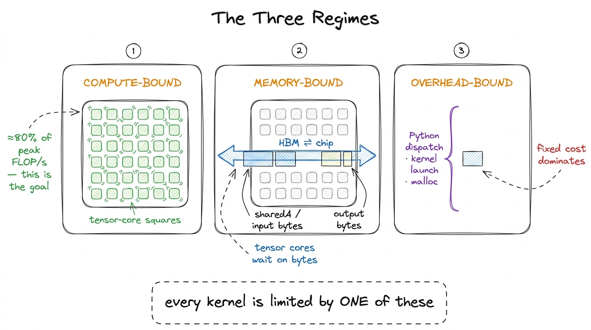

The three regimes: compute, memory, overhead BRRR
There is one question you can ask about any piece of GPU code that will, more often than not, tell you exactly what to do next: what is it waiting on? A kernel is almost never limited by the thing you think it is. It is limited by one of three resources, and learning to tell which — usually in under a minute — is the single highest-leverage skill in performance engineering.1 This framing comes from Horace He's "Making Deep Learning Go Brrrr From First Principles", which is required reading and which this article shamelessly rebuilds.
Those three resources are compute, memory bandwidth, and overhead. Every kernel is bottlenecked by one of them. Optimize the wrong one and you will work very hard to make nothing happen.
The three regimes
Compute-bound means your GPU is actually busy doing floating-point math. The tensor cores are lit, you are pulling a real fraction of the chip's peak FLOP/s, and the only way to go faster is to do less math or use a faster math unit. This is the regime you want to be in — it means the expensive silicon you paid for is doing expensive-silicon things.
Memory-bandwidth-bound means you are spending most of your time moving bytes between memory levels — usually between global memory (HBM) and the chip — rather than computing on them. An element-wise x + 1 reads a number, adds one, and writes it back: two memory operations for one flop. It does not matter how many tensor cores you have; they sit idle while the memory system heaves data around.2 This is why fusion is the highest-leverage inference optimization — it removes the round-trips to HBM between cheap element-wise ops. We spend a whole article on it later.
Overhead-bound means you are spending your time on none of the above: Python interpreter time, framework dispatch, kernel-launch latency, cudaMalloc. If your tensors are tiny, the fixed cost of getting to the GPU dominates the actual work. You can be overhead-bound on a supercomputer.

figure rendering · The three regimes. Almost every kernel you will ever profile lives inHow to tell which one you're in
The master diagnostic is a single ratio. Measure the FLOP/s your kernel actually achieves, and divide by the GPU's peak FLOP/s. If you are hitting 80% of peak, you are — by definition — at least 80% compute-bound, and there is very little left to win. If you are hitting 3% of peak, you are not compute-bound, and adding more math will do nothing; you are almost certainly waiting on memory or overhead.
To predict which one before you write anything, you compare two hardware numbers against one property of your workload. The hardware gives you peak compute (an H100 does about 989 TFLOP/s of BF16 through its tensor cores) and peak bandwidth (about 3.35 TB/s from HBM3).3 These are SXM H100 numbers with the tensor cores in their sparsity-free, realistic regime. Marketing numbers are often 2× higher and assume structured sparsity you rarely have. Divide them and you get the machine's ridge point: roughly 989e12 / 3.35e12 ≈ 295 FLOPs per byte. That is the arithmetic intensity your kernel must exceed to have any hope of being compute-bound.
The workload gives you its arithmetic intensity — FLOPs performed per byte moved. If your kernel does fewer than ~295 FLOPs per byte it reads and writes, the memory system is the wall, full stop, no matter how you write the math.
Consider the two extremes:
- A large square matrix multiply of size
Ndoes2N³FLOPs but only moves about3N²numbers. Its arithmetic intensity grows with N — forN = 4096that is on the order of thousands of FLOPs per byte, far past the ridge. Big GEMMs are compute-bound. Good. - An element-wise activation on that same matrix does
~N²FLOPs and moves2N²numbers: an arithmetic intensity of about0.5. Six hundred times below the ridge. Element-wise ops are hopelessly memory-bound. No amount of tensor core will save them.
Why this decides everything
Once you know your regime, the menu of useful optimizations collapses to almost nothing — which is exactly what you want.
If you are memory-bound, you fuse, you cache in shared memory and registers, you use lower precision to move fewer bytes, you improve coalescing. You do not reach for faster math. If you are compute-bound, you use tensor cores, you pick the right precision, you increase occupancy so the math units never stall. You do not obsess over a few extra HBM reads. If you are overhead-bound, you make bigger batches, you fuse many small kernels into one launch, you use CUDA graphs. Everything else is a distraction.
There is a structural reason this matters more every year: compute is growing faster than bandwidth. Each GPU generation adds FLOPs faster than it adds bytes-per-second, which means the ridge point keeps climbing and more and more kernels fall into the memory-bound basin over time.4 The H100→B200 jump added far more tensor-core throughput than HBM bandwidth. The practical effect: the set of workloads that are "automatically" compute-bound keeps shrinking, and memory-movement tricks keep getting more valuable. The kernel engineer's job is, increasingly, a bytes-movement job wearing a compute-shaped hat.
The one habit to build
Before you optimize anything, predict the regime out loud, then measure it. "This is a small element-wise kernel, so it should be memory-bound; I expect maybe 5% of peak FLOP/s and near-peak bandwidth." Then run Nsight Compute and check. When your prediction is right, you understand the kernel. When it is wrong, you have just found something worth knowing — a hidden copy, an occupancy cliff, a launch you didn't expect.
That predict-then-measure loop is the spine of every worklog on this site. In the very next section we put the roofline model — the picture behind the "295 FLOPs per byte" number — on the wall, and then we start climbing the GEMM ladder from a kernel that reaches a humiliating 1.3% of cuBLAS to one that reaches 93.7%, one measured step at a time.